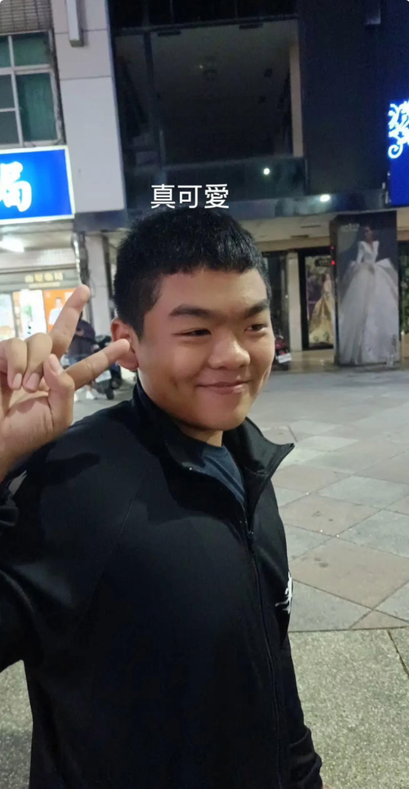
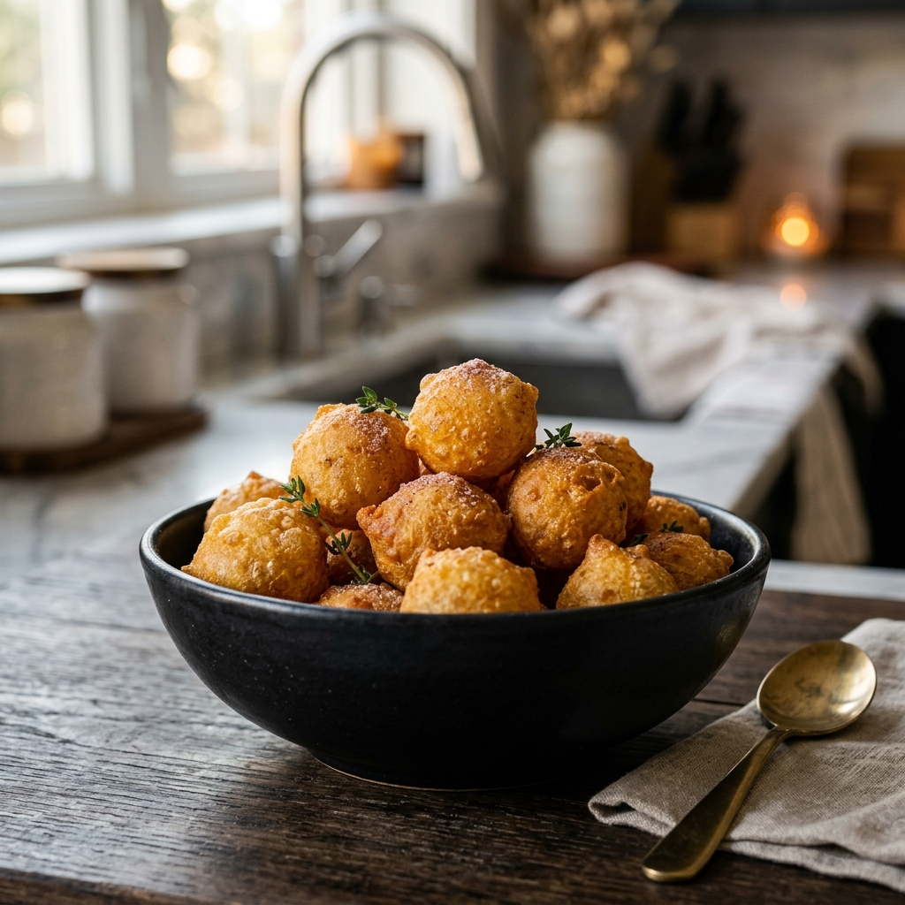

The Journey of Pig
VIC, affectionately known as "Pig" by his closest friends, is a creative soul with an unmatched eye for detail and a heart for simple pleasures.
Beyond the surface, he is a strategist, a friend, and most importantly, an artist in the kitchen. He believes that the best things in life are round, golden, and sweet.
🍠
Signature Hobby
Specializing in the delicate art of crafting the perfect Sweet Potato Balls (地瓜球).
Culinary Mastery
The secret is in the bounce and the sweetness.

Golden Crispy QQ
Perfectly fried, hollow center.